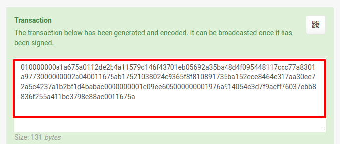
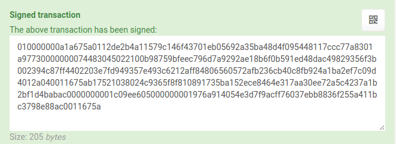

This tutorial will walk you through how to create a time locked wallet that can hold funds to be released in the future.
DISCLAIMER 1: You are advised to use this feature with small amounts of BAY until you completely understand the process and the implications. There is always a possibility of losing your funds if the process is not followed correctly.
DISCLAIMER 2: The regular client in the downloads section of the site can handle most of the details that follow. Nevertheless, this tutorial is perfect for understanding how transactions, wallets, public and private keys work.
For the purpose of this tutorial we will use the following terms:
Time Release Address: This is the address that will be holding the funds for a set amount of time until they are released. This is also known as HODL.
Benefactor: This is the person sending/locking the funds.
Beneficiary: This is the person that will benefit/redeem the funds. They must send their Public Key to the Benefactor in order to redeem the funds.
For the purpose of this tutorial both persons’ actions can be carried out by one person. We will be using the web wallet
TIME LOCKED WALLET CREATION
1.
The beneficiary can create a regular wallet (if they don’t have one already). This is the wallet that will REDEEM the funds. The wallet can be created from the client, or it can be an individual multisig wallet (2 of 2).
{kind=link}
2.
Under the “Receive” tab, the beneficiary will copy the Public Key of the wallet created above, then logout and send the public key to the benefactor.
{kind=link}
3.
The benefactor selects Time Locked Address from the menu and pastes in the previously copied public key. Then select a date/time for funds release and then click Submit. Alternatively, one can set the blockheight of release by checking the current block height using the explorer and estimating 1 block per minute.
{kind=link}
For the purpose of this tutorial, the date/time is only a few minutes into the future.
Here is what was used in this example, for verification:
public key 038024c9365f8f810891735ba152ece8464e317aa30ee72a5c4237a1b2bf1d4bab
date 01/23/2018 12:40
4.
After clicking Submit, you will get the following (example info below so you can verify)
{kind=link}
Wallet to send the FUNDS to:
bUf1UAsfU7rZ7Js7TxCAXSpuxXVSXn94ZN
Redeem script: 040011675ab17521038024c9365f8f810891735ba152ece8464e317aa30ee72a5c4237a1b2bf1d4babac
Shareable URL:
https://wallet.bitbay.market/_test123_/?verify=040011675ab17521038024c9365f8f810891735ba152ece8464e317aa30ee72a5c4237a1b2bf1d4babac#verify
The benefactor can now send FUNDS to the wallet above so that the beneficiary has something to REDEEM.
For the purpose of this tutorial we will send 1 BAY
5.
The benefactor only needs to send the Shareable URL to the beneficiary, who should STORE the shareable url or redeem script code somewhere safe (print or write it down or bookmark it). Its VERY IMPORTANT that the beneficiary understands the importance of saving the shareable url or redeem script, otherwise the funds would stay in the TimeLock address without anyone being able to release them.
The beneficiary can paste into their browser and they will be able to verify the details of this action (wallets involved and date/time of release).
{kind=link}
REDEEM FUNDS
Once the future release date passes, the beneficiary can redeem the funds using the following procedure:
1.
Beneficiary will create a transaction, (menu > transaction) inputing the Redeem script and clicking Load. This will load all the details of the transaction. The Beneficiary then will need to input the wallet address that will receive the redeemed funds, and the amount which will have to be a little less (0.99) than the total. This compensates for the network fee (which is calculated automatically - the difference between outputs and inputs is always the fee). Click Enter when done.
{kind=link}
2.
The transaction has been created and you can see the generated code to be used for the next step:

transaction 010000000a1a675a0112de2b4a11579c146f43701eb05692a35ba48d4f095448117ccc77a8301a9773000000002a040011675ab17521038024c9365f8f810891735ba152ece8464e317aa30ee72a5c4237a1b2bf1d4babac0000000001c09ee605000000001976a914054e3d7f9acff76037ebb8836f255a411bc3798e88ac0011675a
3.
Under menu > sign, the Beneficiary will then sign the transaction with their own wallet private key. The
private key can be found under the Receive tab on web wallet.
{kind=link}
4.
After signing the transaction the following information is created:

signed transaction 010000000a1a675a0112de2b4a11579c146f43701eb05692a35ba48d4f095448117ccc77a8301a97730000000074483045022100b98759bfeec796d7a9292ae18b6f0b591ed48dac49829356f3b002394c87ff4402203e7fd949357e493c6212aff84806560572afb236cb40c8fb924a1ba2ef7c09d4012a040011675ab17521038024c9365f8f810891735ba152ece8464e317aa30ee72a5c4237a1b2bf1d4babac0000000001c09ee605000000001976a914054e3d7f9acff76037ebb8836f255a411bc3798e88ac0011675a
Note: One can also verify the signed transaction by going to menu > verify
5.
Lastly, under menu > broadcast, the Beneficiary will broadcast the signed transaction. If successful, this will produce a transaction ID. If not successful, simply wait a few moments and try again.
{kind=link}
After it has been succesfully broadcast the funds will be released and the receiving address used in step 1 should see them shortly.
Final words
It is extremely important for the Beneficiary to store the shareable url or redeem script in a secure place.
There is no possible way to release the funds without them.
The above procedure is a very elegant way to solve many use cases, all with a few steps and sending a URL to the other party.
- Make a WILL, with the beneficiary only needing the shareable url and their own wallet’s private key to unlock it when the time comes.
- Lend someone FIAT or other currency/goods and get the shareable URL (verifiable promise) to get BAY on a future date.